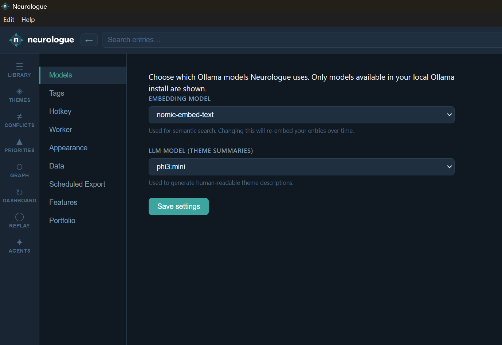
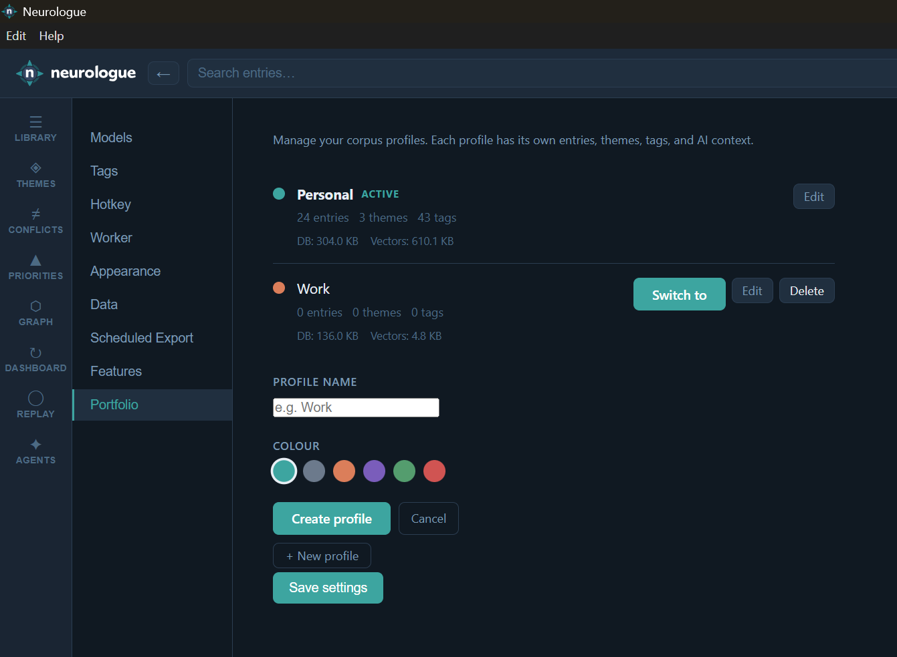

Settings
Configure models, background tasks, appearance, data management, and optional features.
Click Settings in the left navigation rail of the Library window (the cog icon at the bottom of the rail). Settings are organised into tabs at the top of the settings view.

Models
Choose which locally installed Ollama models Neurologue uses for each AI task. Only models currently available in your Ollama install are listed in the dropdowns.
| Setting | Default | Used for |
|---|---|---|
| Embedding model | nomic-embed-text |
Generating vector embeddings for all entries (semantic search, similar entries, themes, tag deduplication, conflict detection) |
| LLM model | phi3:mini |
Theme names and summaries, entry categorisation, tag suggestions, conflict detection, agent reports, EVOM priority scoring |
Changing the embedding model means existing entries were embedded with the old model. The background worker will automatically re-embed all entries over time using the new model. During the transition, semantic search results may be inconsistent. You can also trigger an immediate full reindex in the Data tab.
Click Save settings at the bottom of the settings view to apply changes. They take effect on the next background worker tick.
Tags
Multi-word tag format
Controls how LLM-generated tag suggestions are normalised when they contain more than one word:
- Hyphenated (default) — e.g.
machine-learning - Concatenated — e.g.
machinelearning
This only affects suggested tags; tags you type manually are saved exactly as entered.
Duplicate detection sensitivity
Controls how closely two tags must be related (semantically) to appear as possible duplicates in the Tag Management panel. Three presets are available:
- Strict — only near-identical meanings are flagged (fewer false positives)
- Balanced (default) — catches most genuine duplicates without excessive noise
- Broad — more suggestions, including loosely related tags (may include false positives)
This requires Ollama to be running; structural duplicates (spelling variants, plural forms) are always detected regardless.
Hotkey
The Global shortcut field shows the key combination that opens the capture popup from anywhere on your desktop — even when Neurologue isn't focused.
Changing the hotkey
- Click Change next to the hotkey field.
- The field shows Press keys… — press the new combination (e.g. Ctrl+Shift+N).
- The combination appears in the field. Press Escape or Cancel to discard without saving.
- Click Save settings. If the shortcut is already claimed by another application, a conflict warning is shown and the previous shortcut is kept.
The shortcut must include at least one modifier key (Ctrl, Alt, or Shift). The default is Ctrl+Shift+Space.
Worker
The background worker runs several tasks on a schedule. This tab lets you tune how often each task runs. Changes take effect immediately — no restart required.
| Setting | Default | Description |
|---|---|---|
| Embedding scan interval | 60 s | How often the worker checks for new entries that need embedding. Lower values mean faster embedding of new captures. |
| Clustering interval | 300 s (5 min) | How often entries are re-clustered into themes. Increase this if clustering is putting load on your machine. |
| Contradiction scan interval | 900 s (15 min) | How often the scheduled contradiction scan runs to find new conflict pairs. |
| Scheduled scan pair limit | 15 | Maximum number of entry pairs checked per scheduled contradiction scan. Manual "Scan now" in the Conflicts view is always unlimited. |
Contradiction scan scope
Controls which entry pairs are candidates for contradiction detection:
- Theme only (default) — only entries within the same theme are compared
- Tags also — entries sharing a tag are also compared, even across themes
- Global ⚠ — all-pairs scan; comprehensive but expensive on large corpora
Activity log
The Activity log panel at the bottom of the Worker tab shows recent background task completions — embeddings, clustering runs, contradiction scans. Click Refresh to update it. You can also click the Worker status indicator in the status bar at any time to see the same log in a popup.
Appearance
Colour scheme
Toggle between Dark (default) and Light mode. The preference is saved in settings.json and applied on every launch.
Home view
Choose which view Neurologue opens to when it launches. Any view in the navigation rail can be set as home:
| Option | Opens to |
|---|---|
| Library (default) | The entry timeline with search and filters |
| Themes | The themes cluster browser |
| Conflicts | The contradiction detection view |
| Priorities | The EVOM priority scoring view |
| Graph | The knowledge graph |
| Dashboard | The cognitive dashboard overview |
| Replay | The memory replay view |
| Agents | The AI agents view |
Data
The Data tab contains tools for importing content, managing your corpus, and starting fresh.
Load demo content
Imports 21 sample entries across 4 themes so you can explore Neurologue's features before adding your own notes. Click Load Demo Content… and confirm. Existing entries are never overwritten — demo content is added alongside whatever you already have.
The demo corpus is a good way to see themes, conflicts, and priorities working immediately without waiting to accumulate your own entries.
Import from CCF snapshot
CCF (Canonical Corpus Format) is the portable format used by Neurologue's Export feature. To import a previously exported snapshot:
- Click Import CCF…
- Select the CCF export folder (the folder containing
entries.json,themes.json, etc.). - Neurologue imports entries and themes from the snapshot. Entries with matching IDs are skipped — so re-importing a snapshot will never create duplicates.
This is the recommended way to migrate your corpus between devices, or to restore from a backup.
Reindex all entries
Clears all stored embeddings and re-processes every entry through the embedding model. Use this after changing the embedding model (in the Models tab) to ensure all entries are embedded with the new model, or if semantic search feels consistently off.
Click Reindex all entries… and confirm. The background worker will begin reindexing immediately — watch the Worker indicator in the status bar to track progress. Requires Ollama to be running.
Start fresh
Permanently deletes all entries, themes, embeddings, and the vector store. Use this to reset Neurologue to a clean state.
This action is irreversible. Before anything is deleted, you will be offered the option to take a CCF backup to a folder of your choice. We strongly recommend taking the backup — it allows you to re-import your data later if needed.
Scheduled Export
Neurologue can automatically snapshot your corpus on a regular schedule, writing to a folder of your choice. Each snapshot creates a timestamped sub-folder containing the standard CCF export files.
Enabling scheduled exports
- Tick Enable scheduled exports.
- Choose Daily or Weekly frequency.
- Click Choose folder… to set the destination. Each run creates a sub-folder named with the date and time (e.g.
2026-05-21T08-00-00/). - Optionally tick Include diff.json to include a file listing only the entries added or changed since the previous snapshot.
- Click Save settings.
Adapter transforms
After each scheduled snapshot, Neurologue can automatically transform the output into additional formats. Tick any adapter you want to run automatically. Available adapters correspond to the external formats supported by the Export feature.
Export history
The Export history panel lists previous scheduled export runs with timestamps and entry counts. Click Refresh to reload it. Use Export now to trigger a snapshot immediately without waiting for the next scheduled run.
Features
The Features tab controls optional capabilities. Disabled features leave no trace in the UI.
Portfolio
Portfolio lets you organise your notes into separate named profiles — for example, Personal and Work. Each profile has its own completely independent entries, themes, tags, embeddings, and AI context. The profiles share your Ollama models and global settings.
Toggle Portfolio on to enable the feature. A Portfolio tab appears in the Settings subnav where you can create and manage profiles. A coloured badge in the toolbar shows your active profile.
When Portfolio is disabled, all notes belong to a single unnamed default profile — the normal single-corpus mode.
Portfolio
This tab is only visible when the Portfolio feature is enabled. It lists all your profiles and lets you create new ones.

Creating a profile
- Click + New profile.
- Enter a name (up to 40 characters).
- Choose a colour from the swatches — this colour appears in the toolbar badge when the profile is active.
- Click Create profile.
The new profile starts empty. Switch to it using the Switch to button next to its row, or via the profile badge in the toolbar.
Switching profiles
Click the coloured profile badge in the top toolbar to see a list of all profiles and switch between them. Switching restarts the background worker with the new profile's data. The Library, Themes, and all Analysis views immediately reload to show the active profile's content.
Deleting a profile
Click the Delete button next to a profile in the list. A confirmation prompt appears showing the profile's entry count. You can take a CCF backup of the profile before deleting. Deletion is permanent.
You cannot delete the currently active profile — switch to another profile first.
Where settings are stored
All settings are stored in settings.json in your OS user data directory:
| OS | Path |
|---|---|
| Windows | %APPDATA%\Neurologue\settings.json |
| macOS | ~/Library/Application Support/Neurologue/settings.json |
| Linux | ~/.config/Neurologue/settings.json |